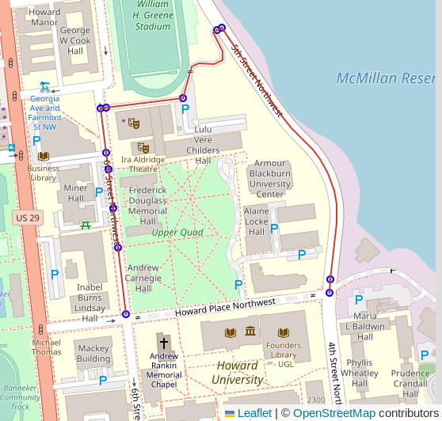

Routing Roads
PgOSM Flex makes it easy to get started with routing with OpenStreetMap data and pgRouting. The best experience is with pgRouting 4.0 and newer. If you are using a pgRouting prior to 4.0 see Routing Roads: Legacy (pgRouting 3).
Prepare routing edge networks
You should have ran the steps in Prepare for Routing before continuing.
PgOSM Flex includes functions to prepare routing edge networks for data in
osm.road_line by running the appropriate procedure.
This procedure can take a while to run on larger regions, see the Timing section
below for more details.
CALL osm.routing_prepare_road_network();
You should see output similar to below. This example is to prepare the data for Colorado and took 8 minutes in this example. This step takes roughly 20 seconds to process for Washington D.C.
NOTICE: Edge table table created
NOTICE: Nearby table created
NOTICE: Intersection table created
NOTICE: Blades created
NOTICE: Split edges created
NOTICE: Edge data in route_edges_output temp table.
NOTICE: Created table osm.routing_road_edge
NOTICE: Created table osm.routing_road_vertex from edges.
NOTICE: Edge table updated with vertex source/target details.
CALL
Time: 484294.179 ms (08:04.294)
The procedure creates two tables:
osm.routing_road_edgeosm.routing_road_vertex
These tables make up the routing network, built from data in osm.road_line.
The _vertex table has the points that can be used as start/end points for routes.
The _edge table has the edges (lines) that can be routed, along with their
costs and other access control measures.
Do not make customizations to the tables generated by the procedures without renaming the tables to avoid data loss.
Changes to OpenStreetMap data will not be reflected in the routing network until the procedure is ran again. This is not automated along with
--replication.
Routing Examples
The data preparation procedures above handle the steps to create a routable edge network with usable costs.
Determine route start and end
The following query identifies the vertex IDs from the osm.routing_road_vertex
table to use for start and end points.
The query uses an input set of points
created from specific longitude/latitude values.
Make note of the start_id and end_id values from this query
to use in subsequent queries. The following queries are setup to run
within DBeaver using :start_id and :end_id variables for dynamic querying.
The query with Longitude/Latitude simulates a user clicking in a GUI map to set start and end points. This type of interaction typically results in longitude and latitude values.
WITH s_point AS (
SELECT v.id AS start_id, v.geom
FROM osm.routing_road_vertex v
INNER JOIN (SELECT
ST_Transform(ST_SetSRID(ST_MakePoint(-77.0211, 38.92255), 4326), 3857)
AS geom
) p ON v.geom <-> p.geom < 20
ORDER BY v.geom <-> p.geom
LIMIT 1
), e_point AS (
SELECT v.id AS end_id, v.geom
FROM osm.routing_road_vertex v
INNER JOIN (SELECT
ST_Transform(ST_SetSRID(ST_MakePoint(-77.0183, 38.9227), 4326), 3857)
AS geom
) p ON v.geom <-> p.geom < 20
ORDER BY v.geom <-> p.geom
LIMIT 1
)
SELECT s_point.start_id, e_point.end_id
, s_point.geom AS geom_start
, e_point.geom AS geom_end
FROM s_point, e_point
;
┌──────────┬────────┐
│ start_id │ end_id │
╞══════════╪════════╡
│ 14630 │ 14686 │
└──────────┴────────┘
Warning: The vertex IDs returned by the above query will vary. The pgRouting functions that generate this data do not guarantee data will always be generated in precisely the same order, causing these IDs to be different.
Route with Vertex Start/End IDs
Routing using PgOSM Flex's built-in travel-time calculations is as simple as running a function, passing in an ID for the start and end vertices.
SELECT *
FROM osm.route_motor_travel_time(:vertex_start_id, :vertex_end_id)
;

Beyond the route shown in the screenshot above the table below shows the route has 13 total segments and will take an estimated 73 seconds (1 minute, 13 seconds) to travel.
┌──────────┬────────────────────┐
│ segments │ total_cost_seconds │
╞══════════╪════════════════════╡
│ 13 │ 73.00033290095476 │
└──────────┴────────────────────┘
This routing function uses the cost_motor_forward_s
and cost_motor_reverse_s columns, combined with
the pgosm.road.traffic_penalty_normal column, to compute travel time.
The
pgosm.road.traffic_penalty_normalcolumn can be adjusted to influence the timing model. Other penalty / cost models can also be investigated.
Routing by Joining to Inputs
This next example expands beyond using singular routes to generating routes
based on a table of inputs. The osm.route_motor_travel_time() function is
a set-returning function and can be used in a lateral join.
Example Table - Random Points
For the purpose of this example, create a temp table route_vertex_combos
with a few start/end points to route between. The LIMIT 4 sets the number
of vertices to select. The final output is (N * N) - N potential routes
to generate.
DROP TABLE IF EXISTS route_vertex_combos;
CREATE TEMP TABLE route_vertex_combos AS
WITH vertices AS (
SELECT v.id AS vertex_id, v.geom
FROM osm.routing_road_vertex v
INNER JOIN osm.routing_road_edge e
ON v.id IN (e.vertex_id_source, e.vertex_id_target)
AND e.route_motor
ORDER BY random()
LIMIT 4 -- results in row count: (N * N) - N
)
SELECT a.vertex_id AS vertex_id_start
, b.vertex_id AS vertex_id_end
FROM vertices a
CROSS JOIN vertices b
-- Don't route to yourself :)
WHERE a.vertex_id <> b.vertex_id
;
Generate the Routes
The table if start/end points can be joined to the osm.route_motor_travel_time()
function.
DROP TABLE IF EXISTS public.my_random_routes;
CREATE TABLE public.my_random_routes AS
SELECT v.*, rte.*
FROM route_vertex_combos v
CROSS JOIN LATERAL osm.route_motor_travel_time(v.vertex_id_start, v.vertex_id_end) rte
;
Warning: The above query can take a long time to execute, depending on the number of inputs and the size of your routing network. It is often best to calculate routes in batches instead of a full join like shown in this simple example.
Routes can now be examined with costs often desired to be converted to minutes or hours. The example here shows an example of a long route taking a few hours.
SELECT vertex_id_start, vertex_id_end, segments
, total_cost_seconds / 60 AS total_cost_minutes
, total_cost_seconds / 60 / 60 AS total_cost_hours
, geom
FROM public.my_routes
WHERE vertex_id_start = 1817591
AND vertex_id_end = 17109
;
┌─────────────────┬───────────────┬──────────┬────────────────────┬───────────────────┐
│ vertex_id_start │ vertex_id_end │ segments │ total_cost_minutes │ total_cost_hours │
╞═════════════════╪═══════════════╪══════════╪════════════════════╪═══════════════════╡
│ 1817591 │ 17109 │ 783 │ 350.379710135436 │ 5.839661835590601 │
└─────────────────┴───────────────┴──────────┴────────────────────┴───────────────────┘
Routing Data Preparation Timing
This section outlines a few timing references for routing preparation to help gauge how long this might take for your region's data. Note these are generic timings using the built-in database in the PgOSM Flex Docker image, without any tuning from default configuration. Your tuning and your hardware will influence these timings.
Note: Testing was done with PgOSM Flex 1.2.1 on a personal laptop.
- D.C.: 18 seconds
- Colorado: 11.5 minutes
The Colorado data set has 1.2M input roads resulting in 2.6M edges after splitting.
┌────────┬───────────────────┬─────────┐
│ s_name │ t_name │ rows │
╞════════╪═══════════════════╪═════════╡
│ osm │ routing_road_edge │ 2560998 │
│ osm │ road_line │ 1189678 │
└────────┴───────────────────┴─────────┘